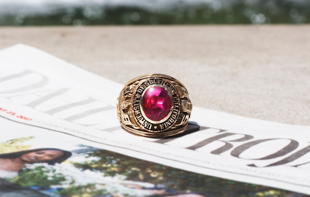

A Dark Past
Former president Rufus Von KleinSmid transformed USC, but his otherwise accomplished legacy is tarnished by his role in the eugenics movement.
By Terry Nguyen
News Assignments Editor
From the first time students step on the USC campus, they hear about the Trojan Family. They are welcomed into it, told of its legacy and embraced by its rich tradition.
This can seem daunting, intangible, mythical, even far-fetched. But I can promise you that whether you are the first in your family to attend college or a fourth-generation Trojan, the Trojan Family will take hold of you during your four years here, and will carry on with you long after you leave the campus.
Whether you are part of an extensive USC legacy, or you are forging a legacy of your own, this special supplement aims to give you an introduction into the Trojan Family — the good, the bad and the historic.
For me, Cardinal and Gold runs in my blood. I am the sixth in my family to attend USC. Each family member experienced USC in a unique way, and found their way to the Trojan Family on their own terms, but it was my grandfather who made me believe in the Trojan Family.
My grandfather, Charles McDonald, graduated from USC in 1958, exactly 60 years from my scheduled graduation date in May. His love for USC defied space and time. He attended every USC football game, even those outside of Los Angeles, until his legs could no longer support him. He could be found at every home game, perched on his USC walker, fingers laced together in his lap, watching the team he had loved for so long.
He used to tell me that, as a young boy, he would listen to the USC football games on his handheld radio and wait to hear the band playing “Conquest.” Until the year he died, his eyes would well up with tears when he heard the opening notes, memories and pride bubbling up inside him. In fact, he loved the song so much that he asked it be played at his funeral.
When he died my freshman year at USC, he left me his USC class ring, battered and imperfect, just like he was. He left it wrapped up in a crumbled piece of notebook paper, where he had written, “I treasured this ring like I treasure you.”
To some, it may seem odd to have a dying wish of passing on a college ring, but that’s the power of the Trojan Family. And that was when I first knew it existed.
It may not come to you in a 60-year-old class ring, or in a funeral soundtracked to the Trojan Marching Band, but when it comes, you’ll know.
To the Trojan Family past and present, this one’s for you.
Emma PeplowFormer president Rufus Von KleinSmid transformed USC, but his otherwise accomplished legacy is tarnished by his role in the eugenics movement.
By Terry Nguyen
News Assignments Editor
With the opening of the 15-acre, residential and retail behemoth that is the USC Village, The University must confront its impact on the future of the surrounding community.
By Sarah Chan and Kylie Cheung
News Editor and News Assignments Editor
Fifty years later, these Trojans still bleed Cardinal and Gold.
By Emma Peplow
Editor-in-Chief

The Halderman name at USC is nothing new.
Senior Drew Halderman is the 19th member of his family with ties to the Trojan family.
By Sonali Seth
Special Projects Editor

Professor Trisha Tucker has spent decades as part of the Trojan family.
By Kitty Guo
Lifestyle Editor
The ninth horse to represent USC as Traveler is set to make his debut in the Coliseum on Sept. 2.
By Allen Pham
Associate Managing Editor

Map from USC Village
Click each picture to get to know some of the newest members of the Trojan Family.
Gabriel Katz
Newport Beach, CA
Business Administration
Jenny Jiang
Beijing, China
Urban Studies and Planning
Eileen Toh
Saratoga, CA
Human Biology
Darren Tsai
San Jose, CA
Neuroscience
Tara Baudry
Newport Beach, CA
Health and Humanity
Zade Kaylani
Newport Beach, CA
Aerospace Engineering